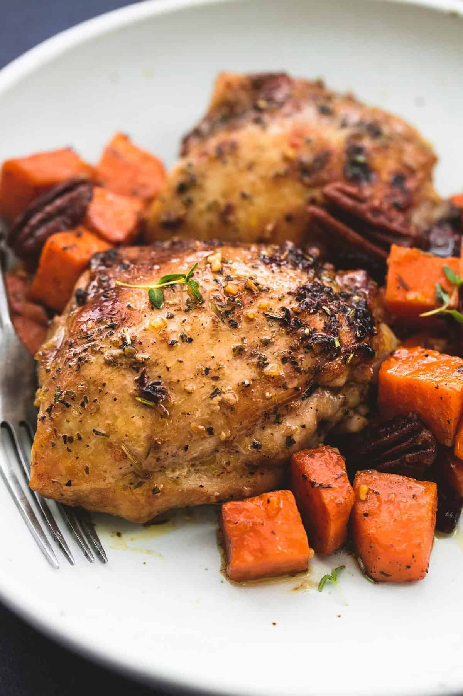

Chicken Breast and Sweet Potatoes

This chicken breast and sweet potatoes recipe is one of the healthiest meals out there.
The overall macros come to about 450 calories and 50 grams of protein.
Ingredients
- 8 oz Boneless Skinless Chicken Breast, Pounded thin
- 200g Sweet Potato (Around 1 large or 1.5 medium)
- 1/2 cup Greek Yogurt
- 1 tsp Smoked Paprika
- 1 tsp Garlic Powder
- 1 tsp Salt
- 1 tsp Black Pepper
- 1 tsp Oregano
- 1 tsp Onion Powder
- 1 tsp Cumin
- Cilantro
- 1 Lime
- Avocado/Olive Oil
Steps
- Put the chicken breast in a mixing bowl.
- Add greek yogurt and seasonings to the bowl.
- Mix well and marinate for at least 1 hour.
- Dice up sweet potato into 1-inch cubes.
- Season with salt and pepper and spray some oil.
- Air fry for 15 minutes at 375-380 degrees Fahrenheit.
- Once chicken is marinated, warm up a pan on medium-high heat.
- Spray a good amount of oil onto the pan.
- Sear chicken on one side, let it cook for 5-6 minutes.
- Flip chicken.
- Once internal temp is 165 degrees Fahrenheit, take off pan and rest for 4-5 minutes.
- Slice and serve with sweet potatoes. Then enjoy!